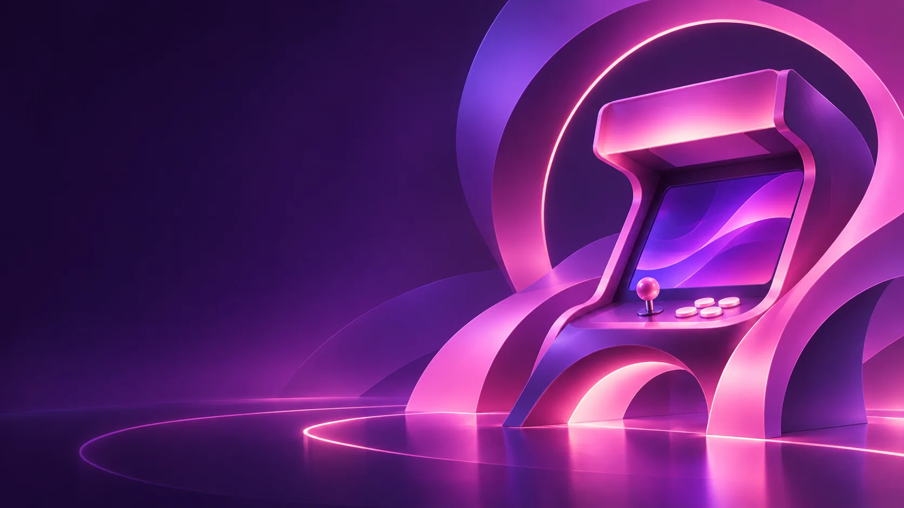
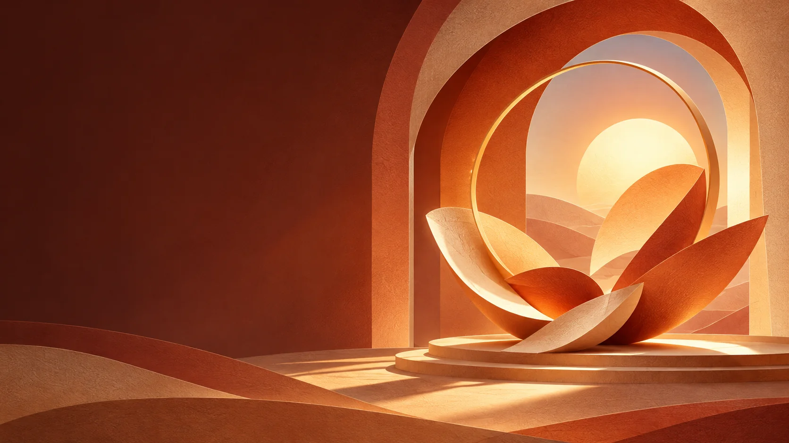
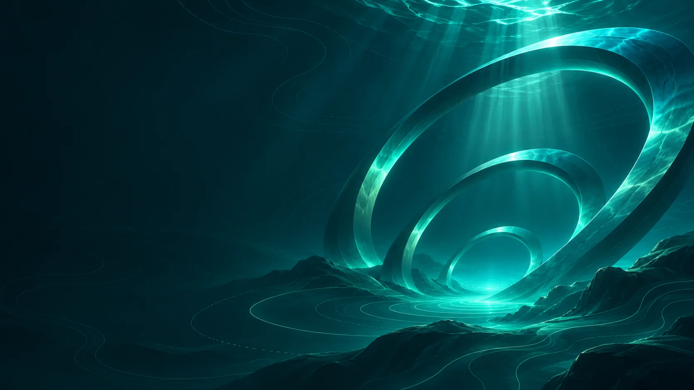
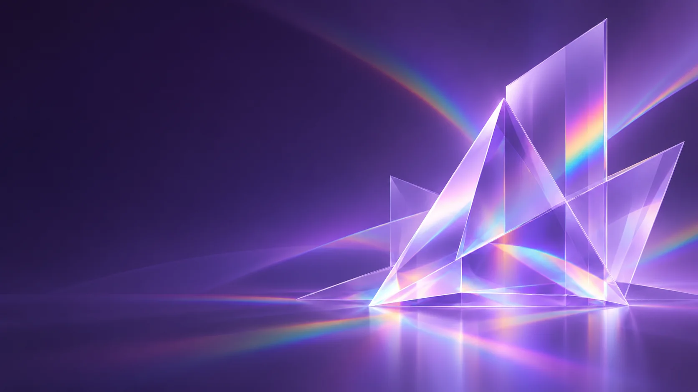
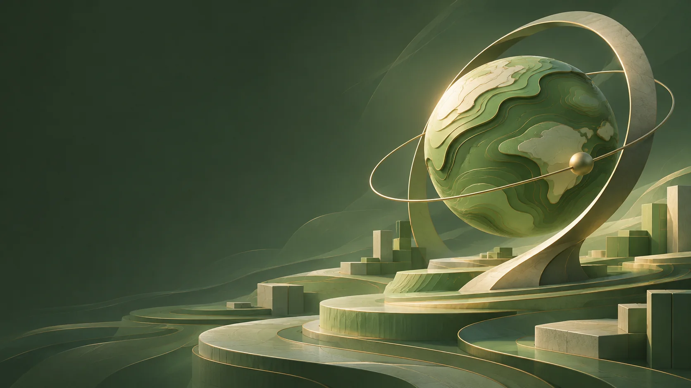

A different atmosphere.
Ten original universes, with the same controls underneath.
Cosmic

Arcade

Solstice
Metro
Sakura

Abyss

Prism

Ten original universes, with the same controls underneath.




